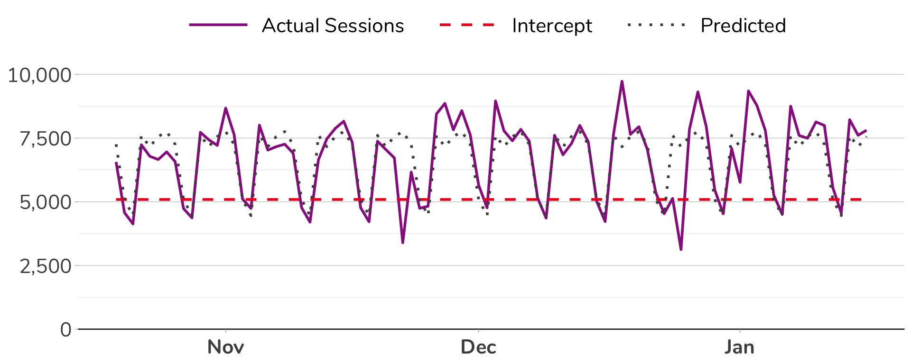

Regression – Quantifying the Impact of Day of Week

- For additional examples, downloadable code, and explanations of the overall effort, see: https://github.com/SDITools/ga-and-r-examples
- To see this specific example in Shiny (web/interactive) form, see: https://gilligan.shinyapps.io/regression/
Overview
This example is an exploration of using linear regression with categorical/nominal variables. Specifically: with day of week. It will answer two questions:
- What % of traffic (although it could be any metric) is explained simply by which day of the week it is?
- What is the relative impact of each day of week on the overall traffic?
This is a bit of an odd way to go about this, in that we would typically perform “time-series decomposition” and then look at the details for a “7-day season.” In theory, that would return a pretty similar result. But, it’s instructive to walk through a regression to get an understanding on how to perform regression with categorical (aka, nominal) variables, which “day of week” actually is.
Note that this approach – unlike a time-series decomposition – does not take into account overall trends in the data, such as a general trend of increasing traffic over time. Again, though, that’s okay for shorter-term assessments, and for pedagogical purposes.
The broader application of this approach probably wouldn’t be on “traffic,” but, rather, would be on some form of conversion, and the model would give the multiplier for each session that had a given set of characteristics (e.g., a mobile visitor from paid search) on whatever that conversion (or other outcome – such as revenue) would have.
We’re only using “day of week” here because sessions is our independent variable, and a session is a session. So, a mobile visit from paid search contributes one session just like a tablet visit from organic search contributes one session – “characteristics of a session” don’t impact “the fact that it’s as session.” “What day of the week it is,” though, is an entirely independent variable, so it works to check the degree to which the day of week impacts the number of sessions.
Setup/Config
Start by the initial configuration of variables.
# Load the necessary libraries.
if (!require("pacman")) install.packages("pacman")## Loading required package: pacmanpacman::p_load(googleAnalyticsR, # How we actually get the Google Analytics data
tidyverse, # Includes dplyr, ggplot2, and others; very key!
knitr, # Nicer looking tables
kableExtra, # Even nicer looking tables
plotly, # We're going to make the charts interactive
scales, # Useful for some number formatting in the visualizations
MASS) # For our stepwise regression
# Authorize GA. Depending on if you've done this already and a .ga-httr-oauth file has
# been saved or not, this may pop you over to a browser to authenticate.
ga_auth(token = ".httr-oauth")
# Set the view ID and the date range. If you want to, you can swap out the Sys.getenv()
# call and just replace that with a hardcoded value for the view ID.
view_id <- Sys.getenv("GA_VIEW_ID")
start_date <- Sys.Date() - 90 # The last 90 days
end_date <- Sys.Date() - 1 # Yesterday
start_date <- as.Date("2018-10-19") # The last 90 days
end_date <- as.Date("2019-01-16") # Yesterday
# Define our theme -- this will be used later for visualizations
theme_main <- theme_light() +
theme(text = element_text(family="Nunito"),
plot.title = element_text(hjust=0.5, size=18, face="bold"),
legend.title = element_blank(),
axis.text = element_text(size=16),
axis.text.x = element_text(face = "bold", margin = margin(t = 5, unit = "pt")),
axis.line.x = element_line(color = "gray20", size=0.5),
axis.title.y = element_blank(),
axis.title.x = element_blank(),
legend.position = "top",
panel.border = element_blank(),
panel.grid.major.y = element_line(color = "gray80"),
panel.grid.major.x = element_blank(),
panel.grid.minor.x = element_blank())Pull the Data
This is a simple data pull. We’re just pulling data by day (because each day is a different day of the week) and sessions. And, since Google Analytics has a “Day of Week Name” dimension, we’ll go ahead and pull that, too (although we could have easily calculated this afterwards).
# Pull the data. See ?google_analytics_4() for additional parameters. The anti_sample = TRUE
# parameter will slow the query down a smidge and isn't strictly necessary, but it will
# ensure you do not get sampled data.
ga_data <- google_analytics(viewId = view_id,
date_range = c(start_date, end_date),
metrics = "sessions",
dimensions = c("date", "dayOfWeekName"),
anti_sample = TRUE)
# Shorten the day of week values and make it a factor with and order for easier plotting later
# Check the variability of data by weekday
ga_data <- ga_data %>%
mutate(Weekday = substring(dayOfWeekName, 1, 3)) %>%
mutate(Weekday = toupper(Weekday)) %>%
mutate(Weekday = factor(Weekday,
levels = c("SUN", "MON", "TUE", "WED", "THU", "FRI", "SAT"))) %>%
dplyr::select(date, Weekday, sessions)
names(ga_data) <- c("Date", "Weekday", "Sessions")
# Show the head of the returned data
head(ga_data, 12) %>% kable() %>% kable_styling(full_width = F,
font_size = 24,
bootstrap_options = "condensed") %>%
column_spec(1, width = "8em") %>%
column_spec(2, width = "6em") %>%
column_spec(3, width = "6em")| Date | Weekday | Sessions |
|---|---|---|
| 2018-10-19 | FRI | 6564 |
| 2018-10-20 | SAT | 4574 |
| 2018-10-21 | SUN | 4133 |
| 2018-10-22 | MON | 7237 |
| 2018-10-23 | TUE | 6786 |
| 2018-10-24 | WED | 6660 |
| 2018-10-25 | THU | 6957 |
| 2018-10-26 | FRI | 6580 |
| 2018-10-27 | SAT | 4735 |
| 2018-10-28 | SUN | 4370 |
| 2018-10-29 | MON | 7725 |
| 2018-10-30 | TUE | 7434 |
# Go ahead and do a quick visualization of the resulting data
gg <- ggplot(ga_data, aes(x = Date, y = Sessions)) +
geom_line(color = "#9a258f", size=1) +
scale_y_continuous(expand = c(0,0), limits=c(0, max(ga_data$Sessions)*1.05), label = comma) +
labs(title = "Sessions by Day",
x = "Date") +
theme_main
ggThis step is not really necessary to do the regression. It’s just useful to realize that, essentially, we’re looking at all of the dates, organized by weekday, and the median and variability, as well as how many outliers there are, helps with some intuition for later.
# Make a boxplot where we combine all of the data points for each day of week together
gg <- ggplot(ga_data, aes(x = Weekday, y = Sessions)) +
geom_boxplot(fill = "gray90", color = "gray40", outlier.colour = "#9a258f", outlier.size=2.5) +
scale_y_continuous(expand = c(0,0), limits=c(0, max(ga_data$Sessions)*1.05), label = comma) +
labs(title = "Sessions Variation by Day of Week") +
theme_main
ggData Munging
We need convert each day of week to a binary – or “dummy” – variable. This will make sense as we get into it.
Note that the last step in this munging drops the “Saturday” column entirely. Any day of the week could be excluded. This gets explained by saying, “we only need k-1 values,” but, to maybe provide a bit more intuition, this really is pointing out that, if there are 7 possible days of the week, then we only need 6 variables to identify each observation (each row of data) by day. In the way this example is set up, we don’t need Saturday, because we know that any row that is not Sunday, Monday, Tuesday, Wednesday, Thursday, or Friday must be Saturday.
It doesn’t really matter which variable you drop (you can update the code to drop a different day and see that, while the resulting model has different coefficients, it actually returns the exact same results).
# Get the data set up where each day of the week has its own column. That means one of the
# columns will be a "1" and the rest will be "0s" for each date
ga_data_dummies <- ga_data %>%
mutate(var = 1) %>% # Put a 1 in all reows of a column
spread(key = Weekday, value = var, fill = 0) %>% # Create the dummy variables
dplyr::select(Date, SUN, MON, TUE, WED, THU, FRI, Sessions) # Re-order and drop "SAT"
# Display what the data now looks like
kable(head(ga_data_dummies, 12)) %>% kable_styling(full_width = F,
font_size = 24,
bootstrap_options = "condensed") %>%
column_spec(1, width = "10em") %>%
column_spec(2:7, width = "5em") %>%
column_spec(8, width = "8em")| Date | SUN | MON | TUE | WED | THU | FRI | Sessions |
|---|---|---|---|---|---|---|---|
| 2018-10-19 | 0 | 0 | 0 | 0 | 0 | 1 | 6564 |
| 2018-10-20 | 0 | 0 | 0 | 0 | 0 | 0 | 4574 |
| 2018-10-21 | 1 | 0 | 0 | 0 | 0 | 0 | 4133 |
| 2018-10-22 | 0 | 1 | 0 | 0 | 0 | 0 | 7237 |
| 2018-10-23 | 0 | 0 | 1 | 0 | 0 | 0 | 6786 |
| 2018-10-24 | 0 | 0 | 0 | 1 | 0 | 0 | 6660 |
| 2018-10-25 | 0 | 0 | 0 | 0 | 1 | 0 | 6957 |
| 2018-10-26 | 0 | 0 | 0 | 0 | 0 | 1 | 6580 |
| 2018-10-27 | 0 | 0 | 0 | 0 | 0 | 0 | 4735 |
| 2018-10-28 | 1 | 0 | 0 | 0 | 0 | 0 | 4370 |
| 2018-10-29 | 0 | 1 | 0 | 0 | 0 | 0 | 7725 |
| 2018-10-30 | 0 | 0 | 1 | 0 | 0 | 0 | 7434 |
# When performing the regression, we don't actually need the date value, so make a data
# set that has that removed
analysis_data <- ga_data_dummies %>% dplyr::select(-Date)Conduct a Stepwise Regression on ALL Data
This is the “easy” part. We’re just going to run a straight-up regression on all of the data. This has some problems, as there will be a tendency to overfit a model. We’ll come back to that in a bit!
This is a “stepwise regression,” in that it’s going to find the “best” subset of variables for fitting the model – dropping ones that are not really helping the cause. There are tons of articles and posts explaining the nuts and bolts of this, so Google away! Or, here’s one: http://www.sthda.com/english/articles/37-model-selection-essentials-in-r/154-stepwise-regression-essentials-in-r/.
# Fit the full model
full_model <- lm(Sessions ~., data = analysis_data)
# Now, see if stepwise can knock some things out (it shouldn't in this case,
# but it doesn't hurt to try)
step_model <- stepAIC(full_model, direction = "both", trace = FALSE)Evaluate the Model
Let’s look a summary of the model:
# Get just the overall model summary
model_summary <- summary(step_model)
# Output that summary
model_summary##
## Call:
## lm(formula = Sessions ~ SUN + MON + TUE + WED + THU + FRI, data = analysis_data)
##
## Residuals:
## Min 1Q Median 3Q Max
## -4356.9 -319.7 79.0 380.3 2569.5
##
## Coefficients:
## Estimate Std. Error t value Pr(>|t|)
## (Intercept) 5090.2 268.2 18.979 < 2e-16 ***
## SUN -632.0 379.3 -1.666 0.0994 .
## MON 2515.5 379.3 6.632 3.15e-09 ***
## TUE 2071.2 379.3 5.461 4.84e-07 ***
## WED 2471.3 379.3 6.515 5.27e-09 ***
## THU 2662.7 387.1 6.878 1.05e-09 ***
## FRI 2167.5 379.3 5.714 1.67e-07 ***
## ---
## Signif. codes: 0 '***' 0.001 '**' 0.01 '*' 0.05 '.' 0.1 ' ' 1
##
## Residual standard error: 967 on 83 degrees of freedom
## Multiple R-squared: 0.6424, Adjusted R-squared: 0.6165
## F-statistic: 24.85 on 6 and 83 DF, p-value: < 2.2e-16This can be a bit confusing to read, so let’s try to come up with something that, perhaps, is a bit easier to read.
Start by getting the p-value and the adjusted R-squared for the model overall.
# Get the p-value and the adjusted R-Squared for the model overall
# Get the F-statistic
f_statistic <- model_summary$fstatistic
# Get the p_value
p_value <- pf(f_statistic[1], f_statistic[2], f_statistic[3],lower.tail=F)
attributes(p_value) <- NULL
# Get the adjusted R-squared
adj_r_sq <- model_summary$adj.r.squaredThis shows us that the model overall:
- Has a p-value of 0.0000
- Has an adjusted R2 of 0.617 (meaning 61.7% of the actual results are explained by the model).
Now, let’s dig into the actual individual independent variables and their coefficients. This is just a lightly cleaned up visualization of the “variables list” from the model output above. Note that not all days may appear in this table, as the nature of the stepwise regression is that it will add and subtract different features (variables) trying to find the “best” model.
# Make a data frame with just the coefficients and their significance levels. This is converting
# the p-values to confidence levels
ind_vars <- model_summary$coefficients %>% as.data.frame() %>%
mutate(Variable = rownames(.),
Estimate = round(Estimate),
`Confidence Level` = ifelse(`Pr(>|t|)` < 0.01, "99%",
ifelse(`Pr(>|t|)` < 0.05, "95%",
ifelse(`Pr(>|t|)` < 0.1, "90%",
ifelse(`Pr(>|t|)` < 0.2, "80%","<80%"))))) %>%
dplyr::select(Variable, Coefficient = Estimate, `Confidence Level`)
# Output a table with the independent variables
kable(ind_vars, align = c("l", "r", "c")) %>%
kable_styling(full_width = F, bootstrap_options = "condensed", font_size=24) %>%
column_spec(1, width = "6em") %>%
column_spec(2, width = "6em") %>%
column_spec(3, width = "10em")| Variable | Coefficient | Confidence Level |
|---|---|---|
| (Intercept) | 5090 | 99% |
| SUN | -632 | 90% |
| MON | 2515 | 99% |
| TUE | 2071 | 99% |
| WED | 2471 | 99% |
| THU | 2663 | 99% |
| FRI | 2168 | 99% |
It might be helpful to display the above in equation notation – just to get it mapped back to our days with algebra.
# Generate a string that introduces RMarkdown equation notation so that we have values that
# can be pasted together and output as RMarkdown. This gets a little screwy, but it's
# just so we can output a "normal" looking equation.
model_equation <- ind_vars %>%
mutate(rmd = ifelse(Variable == "(Intercept)", round(Coefficient, 0),
paste0(round(Coefficient, 0), " \\times ", Variable)))
model_equation <- model_equation$rmd %>%
paste(collapse = " + ") %>%
paste0("$$Sessions = ", ., "$$")\[Sessions = 5090 + -632 \times SUN + 2515 \times MON + 2071 \times TUE + 2471 \times WED + 2663 \times THU + 2168 \times FRI\]
But, wait. How do I multiply a number by a day?! This gets back to our creation of “dummy variables” earlier. Remember that the data we’re working with created a variable for each day of the week and then assigned each row in the table (each day, each “observation”) as a 1 (yes, it’s that day) or a 0 (no, it’s not that day). That means, in the equation above, most of the values will be multipled by 0 for any given day, while one value will be multiplied by 1.
# Re-display what the data looks like with dummy variables
kable(head(ga_data_dummies, 12)) %>% kable_styling(full_width = F,
font_size = 24,
bootstrap_options = "condensed") %>%
column_spec(1, width = "10em") %>%
column_spec(2:7, width = "5em") %>%
column_spec(8, width = "8em")| Date | SUN | MON | TUE | WED | THU | FRI | Sessions |
|---|---|---|---|---|---|---|---|
| 2018-10-19 | 0 | 0 | 0 | 0 | 0 | 1 | 6564 |
| 2018-10-20 | 0 | 0 | 0 | 0 | 0 | 0 | 4574 |
| 2018-10-21 | 1 | 0 | 0 | 0 | 0 | 0 | 4133 |
| 2018-10-22 | 0 | 1 | 0 | 0 | 0 | 0 | 7237 |
| 2018-10-23 | 0 | 0 | 1 | 0 | 0 | 0 | 6786 |
| 2018-10-24 | 0 | 0 | 0 | 1 | 0 | 0 | 6660 |
| 2018-10-25 | 0 | 0 | 0 | 0 | 1 | 0 | 6957 |
| 2018-10-26 | 0 | 0 | 0 | 0 | 0 | 1 | 6580 |
| 2018-10-27 | 0 | 0 | 0 | 0 | 0 | 0 | 4735 |
| 2018-10-28 | 1 | 0 | 0 | 0 | 0 | 0 | 4370 |
| 2018-10-29 | 0 | 1 | 0 | 0 | 0 | 0 | 7725 |
| 2018-10-30 | 0 | 0 | 1 | 0 | 0 | 0 | 7434 |
Compare the Model Predictions to the Actuals
So, what does our model look like when comparing its predictions to the actual data?
We can simply run the model on the original data set and return a plot that shows the actual vs. predicted values. This is a shortcut to “plotting the residuals” and other checks, but, hopefully, won’t give anyone using this too much heartburn.
Here’s your chance to check the math from the equation above with some of the actual data in the new data frame we’ve created.
# Predict the results using the data -- to get a visualization of the results (basically,
# visualizing the residuals). This is just a vector of predicted sessions.
predict_vs_actual <- predict(step_model, ga_data_dummies)
# Add those predictions to a data frame that shows the actuals. We'll hold onto
# this so we can preview it in the output.
predict_vs_actual_df <- ga_data_dummies %>%
cbind(data.frame(`Predicted Sessions` = predict_vs_actual)) %>%
mutate(`Predicted.Sessions` = round(`Predicted.Sessions`))
# Rename "Sessions" to "Actual Sessions" for clarity
names(predict_vs_actual_df) <- gsub("Sessions", "Actual Sessions", names(predict_vs_actual_df)) %>%
gsub("Predicted.Actual.Sessions", "Predicted", .)
# Output the head
kable(head(predict_vs_actual_df, 12)) %>%
kable_styling(full_width = F, bootstrap_options = "condensed", font_size=20) %>%
column_spec(1, width = "60em") %>%
column_spec(2:7, width = "6em") %>%
column_spec(8, width = "80em") %>%
column_spec(9, width = "40em")| Date | SUN | MON | TUE | WED | THU | FRI | Actual Sessions | Predicted |
|---|---|---|---|---|---|---|---|---|
| 2018-10-19 | 0 | 0 | 0 | 0 | 0 | 1 | 6564 | 7258 |
| 2018-10-20 | 0 | 0 | 0 | 0 | 0 | 0 | 4574 | 5090 |
| 2018-10-21 | 1 | 0 | 0 | 0 | 0 | 0 | 4133 | 4458 |
| 2018-10-22 | 0 | 1 | 0 | 0 | 0 | 0 | 7237 | 7606 |
| 2018-10-23 | 0 | 0 | 1 | 0 | 0 | 0 | 6786 | 7161 |
| 2018-10-24 | 0 | 0 | 0 | 1 | 0 | 0 | 6660 | 7562 |
| 2018-10-25 | 0 | 0 | 0 | 0 | 1 | 0 | 6957 | 7753 |
| 2018-10-26 | 0 | 0 | 0 | 0 | 0 | 1 | 6580 | 7258 |
| 2018-10-27 | 0 | 0 | 0 | 0 | 0 | 0 | 4735 | 5090 |
| 2018-10-28 | 1 | 0 | 0 | 0 | 0 | 0 | 4370 | 4458 |
| 2018-10-29 | 0 | 1 | 0 | 0 | 0 | 0 | 7725 | 7606 |
| 2018-10-30 | 0 | 0 | 1 | 0 | 0 | 0 | 7434 | 7161 |
For reference (if you want to do some math with the above):
\[Sessions = 5090 + -632 \times SUN + 2515 \times MON + 2071 \times TUE + 2471 \times WED + 2663 \times THU + 2168 \times FRI\]
Plot the Results
Finally, let’s plot the results showing three things:
- The Actual Sessions
- The Predicted Sessions – what our regression model (which we determined explains 0.0062% of the actual results)
- The Intercept – this is the constant; think of it as the baseline from which each independent variable increases or decreases the prediction
# Get just the intercept (for a horizontal line we'll add)
y_intercept <- ind_vars %>% filter(Variable == "(Intercept)") %>%
dplyr::select(Coefficient) %>% as.numeric()
# Add that y-intercept as a constant to the data to be plotted. geom_hline()
# would be better for this, but I gave up fighting to get the legend I was
# wanting, so hacking around it this way
predict_vs_actual_for_plot <- predict_vs_actual_df %>%
mutate(Intercept = y_intercept)
# For cleaner plotting, convert that to a tidy format and then turn it into a ggplot
predict_vs_actual_for_plot <- predict_vs_actual_for_plot %>%
dplyr::select(Date = Date, `Actual Sessions`, `Predicted`, Intercept) %>%
gather(key = metric, value = value, -Date) %>%
# Total hack to add better spacing in the legend
mutate(metric = paste0(metric, " "))
# Get the max value so we can expand the limits
y_lim <- max(predict_vs_actual_for_plot$value) * 1.1
# Plot the actuals vs. predicted.
gg_predict_vs_actual <- ggplot() +
geom_line(data = predict_vs_actual_for_plot,
mapping = aes(x = Date, y = value, color = metric,
linetype = metric), size = 1) +
# geom_hline(mapping = aes(linetype = "Intercept", yintercept = y_intercept),
# color="#ed1c24") +
scale_color_manual(values=c("#9a258f", "#ed1c24", "gray30" )) +
scale_linetype_manual(values = c("solid", "dashed", "dotted" )) +
scale_y_continuous(expand = c(0,0), limits = c(0,y_lim), label=number_format(accuracy=1, big.mark=",")) +
labs(x = "Date", y = "Sessions", title = "Sessions by Day: Actual vs. Predicted") +
# guides(fill=guide_legend(keywidth=0.8, keyheight=0.1, default.unit="inch")) +
theme_main +
theme(legend.key.width=unit(4,"line"),
legend.text = element_text(size=16),
axis.line.x = element_line(color = "gray20"),
plot.title = element_blank())
# Output the chart
gg_predict_vs_actual 
So, yes, the Predicted Sessions follow a recurring pattern. That’s because our categorical variable – day of week – only has seven values, so our model is destined to just repeat.
Of course, if there was another variable thrown in (that had significance), this may not be the case, as this recurring pattern would then have some other factor (or set of factors) layered on top of it that added more variability to the prediction.
A Note on Overfitting
In this example, we had a relatively small number of variables, and we used stepwise regression to pick the subset (which may be “all”) that were most predictive of the actual results.
We also did not look at interaction effects, because days of week are quite independent of each other.
Consider if, for instance, we had also used mobile device category and wanted to include the interactions between day of week and device category as a predictor of a result like orders or revenue, then we would have had a bunch more variables (either overtly or behind the scenes). In addition to each day of the week and each device category – the “main effects,” we would have a slew of “interaction effects” to consider as well: Monday + Mobile, Monday + Tablet, Monday + Desktop, Tuesday + Mobile, etc.
Conceivably, we would get to a point pretty easily where we had as many variables as we had observations, which causes all sorts of issues! But, even if things did not get that extreme, having many more variables to consider runs a greater risk of “overfitting the model.” One way to lessen the risk of this is to use k-fold cross validation, which is a mechanism by which the data set is iteratively split into “training” and “testing” groups, and then the different models are run on different sets of training data and then evaluated based on how well they then predict the results in the test data.
We started to include that in this simple model… but, given the (relative) simplicity of this example, we determined it was not sufficiently illustrative to warrant including.